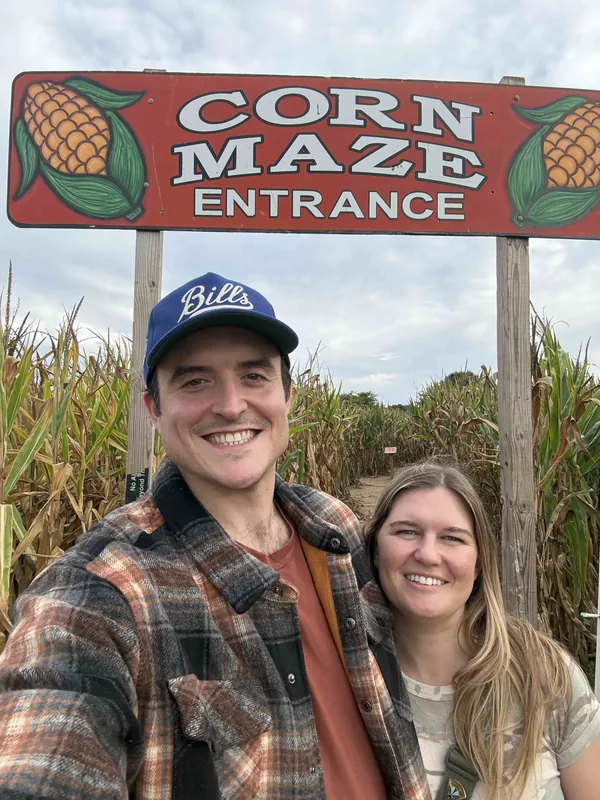

A Little History

The Present
I currently live in Rochester, NY, with my fiancée and her 13-year-old cat, Lou, who basically runs the show. I've been here for 6 years. It's cold, but it's home.
2005–2014
Earlier in my life, I got a bachelor's in English. I spent 15 years thinking that had been an expensive mistake until prompting LLMs made good writing a vital skill. After college, I worked in restaurants, at a ski resort, at a homebrew supply store, on a TV show, and did odd jobs on top of that while living in Park City, UT, Los Angeles, and Portland, OR. In Portland, I got my first design job. At least, the job was with a design company, Ancona + Associates. I fell in love with design there, learning a vocabulary I'd been reaching for without knowing it. I decided to pursue a career in that world and got a master's in HCI at the University of Washington in Seattle. Before that, I did a bootcamp in front-end web development, not sure whether I saw myself on the building or designing side of the fence. It turns out the fence didn't exist.
2015–2020
After Seattle, I spent 5 years in the Bay Area cutting my teeth in tech. I joined a Series A legal tech startup called Ravel Law, where we applied machine learning to create novel research tools for attorneys. Judge Analytics, which I designed, won the American Association of Law Libraries' 2016 New Product Award. I was their sole designer for almost 2 years until we were acquired by LexisNexis, one half of the reigning duopoly in the industry. I learned on the job, building skills, stamina, and product sense in a fast-moving environment.
LexisNexis had a large design team based in Raleigh, NC, at their headquarters. I traveled there regularly and hired a junior designer into my office in SF. I spent another 2 years infusing Ravel's DNA into Lexis' product suite, working across analytics, search, and early concepts for a chatbot research assistant (yes, we were thinking about it all the way back in 2018). The experience taught me how design operates at scale and how to execute in a big company.
From there, I moved to the Toyota Research Institute to gain experience in a new industry, autonomous driving. I was hired onto the Cloud Data team as their embedded designer. We built a variety of tools that served research teams around the building, who worked with logs from the self-driving test cars, developed vision models based on proprietary data annotations, and tested hardware configurations for the fleet. I came away with a better understanding of building for and with technical audiences, and deeper knowledge of model training.
2020–2023
In early 2020, news started coming out about an illness sweeping the country. My lease was up, and San Francisco was milking me dry, so I took a remote job and moved back to Western New York to ride out the plague. I swore loudly and often that I would never move back to Rochester, but there I found myself. I began working with DevonWay as their first design hire. The previous year they had begun a project to transform and modernize their UX. The “Classic” UI dated back to 2005 and looked even older. After struggling on their own for a while, they decided to seek professional help, and an ex-TRI colleague referred me for the job.
I spent 3 years designing and building features across the product. It was an interesting and challenging environment because our software was extremely configurable, meaning customers could and did ask for myriad permutations of our interface. Our solutions spanned safety, quality, risk, and more across a variety of heavily regulated fields. I never thought my familiarity with the Code of Federal Regulations would come in handy. Such is life. It was hard, and I was often limited by how the legacy product was built, but I found ways to improve the system bit by bit, and we tripled revenue. I developed a real sense of ownership, honed my systems thinking, and built influence in a remote org. In September 2023, we were acquired by Ideagen.
2023–2026
For the last 3 years and change, I've led design for Ideagen's EHS pillar, unifying acquired products, expanding into new industries like aviation, and competing with the biggest names in our sector. In that time, we climbed from Specialist to Leader in Verdantix's Green Quadrant. Over the last 18 months or so, design in tech has fundamentally changed. I've become a designer who uses AI tools to build AI products. Our business has transformed from enterprise SaaS to AI everything. I spend my days in Claude's warm embrace and revel in a creative freedom I've never experienced. I'm more excited about design work than I've ever been because, with the advent of these new technologies, I can create living, breathing artifacts that express my ideas in rich detail. Gone are the days of formulaic frameworks, and lo! The age of the designer who ships has come.
Outside of work, my passions are cooking, gardening, the great outdoors, and fitness. I love prestige (and sometimes trash) TV. I've been reading about consciousness, sci-fi thought monsters, and the roots of industrial design. I'm riding the AI wave with enthusiasm, but my P(doom) is not zero. My hopes for the future include returning to writing, visiting every national park, and taking up hobbies where I make things with my hands. If I could travel into space, I would jump at the chance, as long as I get good odds of coming back.